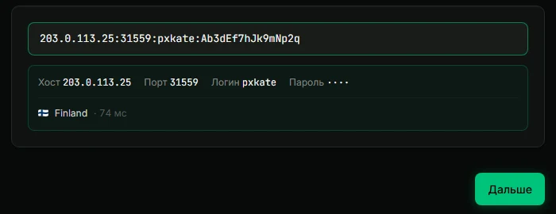
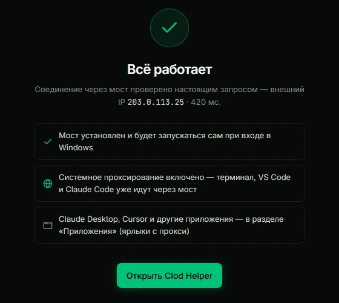
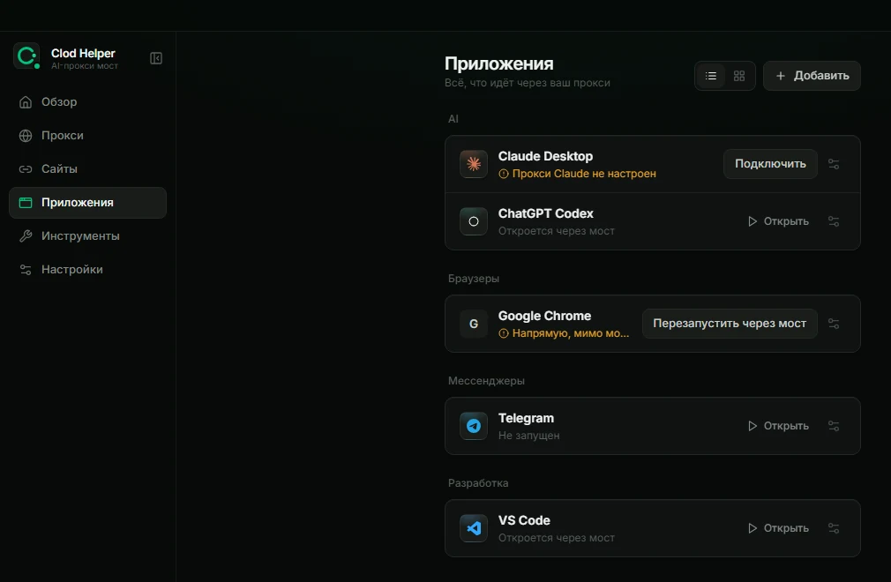
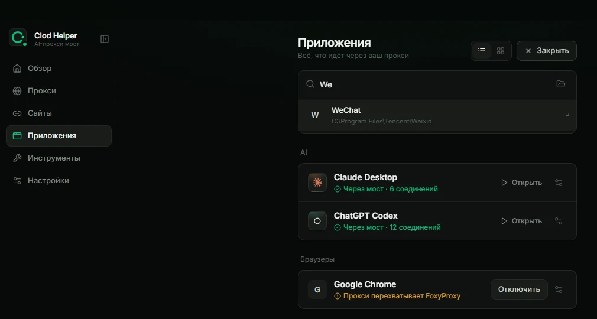
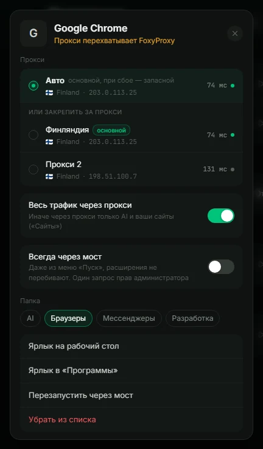
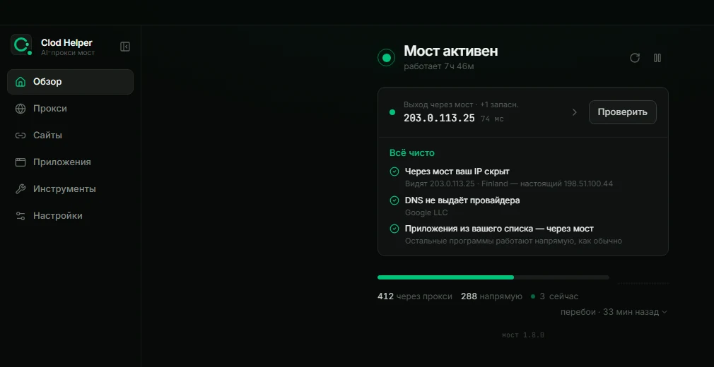
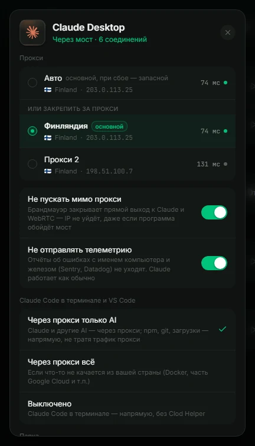

Как это устроено
Пара минут теории — чтобы дальше каждое действие было понятно.
Claude видит, откуда к нему приходят: адрес (IP) и страну. Обычный VPN даёт адрес, которым одновременно пользуются тысячи чужих людей, и этот адрес то и дело меняется. Нам нужно наоборот: один постоянный адрес, который принадлежит только вам.
Поэтому схема такая:
- Свой сервер за рубежом — маленький арендованный компьютер с вашим личным IP. На нём работает прокси.
- Clod Helper — программа на вашем компьютере. Она отправляет через этот прокси только то, что связано с Claude: Claude Desktop, отдельный браузер и Claude Code.
- Всё остальное — банки, Госуслуги, игры, Telegram — работает напрямую, как раньше. Ничего не тормозит и не ругается на чужую страну.
Защита от утечек. Если прокси вдруг перестанет работать, Claude Desktop и ваш браузер для Claude не уйдут в интернет с настоящего адреса — они просто подождут, пока прокси вернётся.
Шесть простых правил
Вся настройка ниже — ради них. Запомните их, и большинство вопросов отпадёт само.
Проверьте аккаунт
1 минута · по желанию, но полезноПрежде чем что-то менять, узнайте, в каком состоянии ваш аккаунт Claude: когда он зарегистрирован, пройдена ли верификация, есть ли подписка. Для этого есть бесплатная закладка Clod Scan — она работает прямо на странице claude.ai и никуда не отправляет ваши данные.
Clod ScanПроверка аккаунта ClaudeПеретащите кнопку в закладки и нажмите её на claude.aiПоднимите свой прокси
15 минут · 269 ₽ в месяцЭто главный шаг. Вы арендуете маленький сервер и одной командой ставите на него прокси. Для этого есть отдельная подробная инструкция с видео — откройте её, пройдите до конца и возвращайтесь сюда.
Инструкция с видео · 7 минутСвой прокси на своём сервереРегистрация, заказ сервера, одна команда в консолиИтог этого шага — строка вашего прокси вида 203.0.113.25:31559:логин:пароль. Скопируйте её: она понадобится в следующем шаге.
Какую страну выбрать? Если вы уже пользовались Claude через какую-то страну — берите сервер в ней же. Если начинаете с нуля — подойдёт рекомендуемый в инструкции сервер в Финляндии или Нидерландах.
Установите Clod Helper
2 минуты- Скачайте установщик со страницы последней версии: для Windows — файл
…x64-setup.exe, для Mac —…universal.dmg. Запустите его. - Если Windows пишет «Система защитила ваш компьютер» — нажмите Подробнее → Выполнить в любом случае. Программа бесплатная и без платной подписи Microsoft, поэтому Windows осторожничает. Подробнее и для Mac →
- При первом запуске откроется мастер. Вставьте строку прокси из шага 2 — формат любой, программа сама разберёт, где адрес, порт, логин и пароль. Нажмите Дальше.

- Дальше программа всё настроит сама — обычно меньше минуты. В конце появится Всё работает и адрес вашего сервера. Нажмите Открыть Clod Helper.

«Этот прокси в России»? Значит, сервер российский — Claude такой не примет. Нужен зарубежный: вернитесь к шагу 2.
Подключите Claude Desktop
2 минуты · нужен установленный Claude DesktopClaude Desktop умеет сам ходить через прокси — Clod Helper включает это одной кнопкой и заодно ставит защиту от утечек.
- В Clod Helper откройте раздел Приложения. В строке Claude Desktop будет написано «Прокси Claude не настроен». Нажмите Подключить.
- Windows спросит разрешение на изменения — нажмите Да. Это один раз.
- Полностью закройте Claude Desktop, если он был открыт: правой кнопкой по значку Claude в трее (у часов) → Quit / Выход. Простого крестика окна мало — Claude останется работать в фоне.
- Откройте Claude кнопкой Открыть в строке Claude Desktop. Строка станет зелёной: «Через мост».

Удобнее с ярлыком. Правой кнопкой по строке Claude Desktop → Ярлык на рабочий стол. Появится ярлык «Claude Desktop (proxy)» — запускайте Claude им. Если Claude уже открыт, ярлык честно скажет закрыть его через трей и запустить снова.
В настройках Claude Desktop (значок ⚙ справа в строке) уже включены Не пускать мимо прокси и Не отправлять телеметрию. Оставьте их включёнными.
Заведите чистый браузер для Claude
5 минутБраузер всё равно понадобится: через него входят в аккаунт, открывают claude.ai, меняют настройки и подписку. Ваш обычный браузер для этого не годится: в нём ваши Google-аккаунты, закладки, расширения-VPN, и запускается он мимо моста.
Решение — отдельный браузер только для Claude, который всегда идёт через ваш прокси.
- Установите браузер, которым вы не пользуетесь. Подходят браузеры на Chromium: Google Chrome, если ваш основной — другой; если основной уже Chrome — возьмите Brave или Microsoft Edge. При установке ничего не импортируйте из других браузеров и не входите в Google-аккаунт.
- Закройте этот браузер полностью.
- В Clod Helper: Приложения → Добавить → начните вводить название («chrome», «brave», «edge») → выберите его в подсказке.
- Нажмите ⚙ справа от браузера и включите Всегда через мост, Windows спросит разрешение один раз. Теперь этот браузер идёт через прокси, даже если открыть его из меню «Пуск», и расширения не смогут это перебить.
- Открывайте браузер кнопкой Открыть в Clod Helper. В строке должно быть зелёное «Через мост».


Не ставьте в этот браузер VPN и прокси-расширения — FoxyProxy, SwitchyOmega, Browsec и подобные. Они перехватывают соединение. Если такое уже стоит, Clod Helper напишет «Прокси перехватывает …» и покажет кнопку Отключить.
Жёлтое «Напрямую, мимо моста» значит, что браузер был открыт до Clod Helper. Нажмите Перезапустить через мост — программа сама закроет его и откроет заново, вкладки вернутся.
Антидетект-браузеры (1Browser, Dolphin и подобные) больше не нужны. Со своим прокси и чистым браузером из Clod Helper они только мешают.
Войдите в Claude
2 минутыВсе входы — только в чистом браузере из Clod Helper. Так аккаунт с первой минуты видит один и тот же адрес.
- В чистом браузере откройте claude.ai и войдите в свой аккаунт.
- Если Claude прислал ссылку для входа на почту — скопируйте её и вставьте в чистый браузер. Не нажимайте её прямо в почте: она откроется в обычном браузере.
- Когда Claude Desktop попросит войти, он откроет страницу входа в браузере по умолчанию. Не входите там: скопируйте адрес этой страницы и откройте его в чистом браузере. После входа браузер предложит открыть Claude — согласитесь.
Подписка и оплата — тоже в чистом браузере на сайте claude.ai, а не внутри Claude Desktop и не в мобильном приложении.
Проверьте, что всё чисто
1 минута- В Clod Helper откройте Обзор и нажмите Проверить. Должно быть «Всё чисто» и три зелёные галочки: IP скрыт, DNS не выдаёт провайдера, приложения из списка идут через мост.
- В чистом браузере откройте ipleak.net. Там должен быть адрес вашего сервера, а не ваш домашний. В блоке WebRTC — тоже не ваш домашний адрес.

Обновились с версии старше 0.8.17? Один раз откройте ⚙ у Claude Desktop, выключите и снова включите Не пускать мимо прокси — так включится новая защита WebRTC.
Claude Code и VS Code
1 минута · только если пользуетесьClaude Code в терминале и VS Code получают прокси от Windows. Мастер уже включил это при установке — проверьте, что режим выбран:
- Приложения → ⚙ у Claude Desktop → блок «Claude Code в терминале и VS Code».
- Выберите Через прокси только AI: Claude пойдёт через прокси, а npm, git и загрузки — напрямую, не тратя трафик сервера. Если что-то не скачивается из вашей страны — Через прокси всё.
- Закройте и откройте заново терминал и VS Code — настройка действует в новых окнах.

Каждый день
Настройка закончена. Дальше всё просто.
- Мост запускается сам вместе с Windows. Значок Clod Helper в трее зелёный — всё в порядке.
- Claude Desktop — ярлыком «Claude Desktop (proxy)» или кнопкой Открыть в Clod Helper.
- claude.ai — только в чистом браузере. Всё остальное — в вашем обычном.
- VPN на компьютере выключен, пока работаете с Claude.
- Если в «Приложениях» что-то жёлтое — нажмите кнопку рядом: программа подскажет и исправит сама.
Ярлыки — аккуратно. Через прокси запускают только ярлыки, созданные Clod Helper, — у них в названии «(proxy)». Обычный ярлык Claude или браузера с рабочего стола запустит программу как раньше. Старые ярлыки лучше удалить, чтобы не перепутать.
А телефон?
Clod Helper работает на компьютере. На телефоне Claude будет ходить через мобильный интернет или ваш VPN — то есть с совсем другого адреса и часто из другой страны. Для аккаунта это выглядит как вход из двух разных мест одновременно.
Совет простой: работайте с Claude на компьютере. Не ставьте мобильное приложение Claude и не оплачивайте подписку с телефона.
Если что-то пошло не так
Самые частые ситуации и что делать.
Частые вопросы
Самое популярное. Остальное — на странице «Вопросы».
Можно остаться на своём VPN?
Для обычных сайтов — пожалуйста. Для Claude — нет: у VPN общий адрес на тысячи человек, он меняется и может отвалиться. Пока работаете с Claude, выключайте VPN, иначе он перехватит соединение и с мостом.
Зачем браузер, если есть Claude Desktop?
Через браузер входят в аккаунт, открывают ссылки из писем, управляют подпиской. Если делать это в обычном браузере, Claude увидит ваш настоящий адрес. Чистый браузер из Clod Helper ходит через тот же прокси, что и Desktop.
Нужен ли антидетект-браузер (1Browser, Dolphin)?
Нет. Это старая схема. Со своим прокси достаточно обычного чистого браузера, добавленного в Clod Helper.
Можно купить готовый прокси вместо своего сервера?
Можно, Clod Helper примет любой HTTP или SOCKS5 прокси. Но у купленного прокси вы не знаете, кто пользовался адресом до вас и кто пользуется сейчас. Свой сервер стоит столько же, а адрес гарантированно только ваш.
Clod Helper работает на Mac?
Да, на macOS 11 и новее (Apple Silicon и Intel). На Mac мастер сразу настраивает и Claude Desktop — macOS попросит пароль. Linux пока не поддерживается.
Это безопасно? Вы видите мои данные?
Нет. Мост работает только на вашем компьютере и отправляет трафик только на ваш прокси. Логин и пароль прокси хранятся у вас. Код открыт, обновления подписаны — подменённую версию программа не поставит.